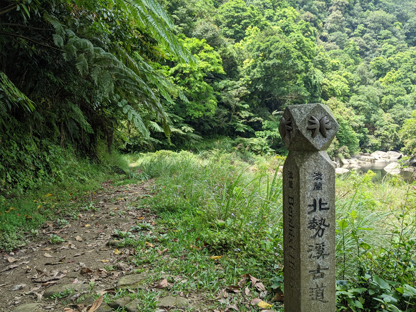
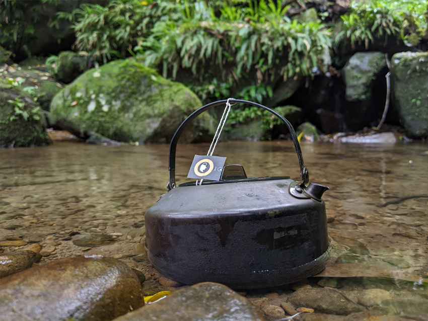

在這次的連假裡，我與我的家人們一同前往位於宜蘭的礁溪老爺飯店入住，也多虧於仁寶的特約優惠，讓我們能夠以較便宜的價格入住。
|
礁溪老爺本身的地理位置是很不錯的，在礁溪車站附近，卻又能巧妙的避開塵囂，帶給我們難得的幽靜。踏入飯店映入眼簾的寬敞的空間，且許多地方都是用木頭所建而成的，帶來了日式風格。在櫃台辦理登記入住後，房務人員帶我們前往我們各自的房間，並有耐心的向我們介紹房間的一切。我們家人其中一間甚至完全是榻榻米，讓我們同行的小孩非常興奮，因為這是他們第一次見到榻榻米。接著就是我們的房間，真的令我們很驚豔，不但有臥室，甚至還有客廳的概念，而且整間房都是木頭打造的，這讓我與我老婆非常開心，一直很喜歡這種日式風格的房間。
| 更不用提，房間還有專屬的浴缸給你泡溫泉，可以在這裡洗去一天的疲憊。 |
|  |
| 沐浴乳跟洗髮精還各有兩種不同味道讓你做選擇。 |
住礁溪老爺飯店有個優點是飯店裡面的設施你都可以使用，所以你不需要再離開飯店，就一整天泡在飯店裡就好。他們這裡的設施很多樣化，有在室外的游泳池、各種spa，甚至還有溫泉魚讓你可以幫腳底去去角質，等於包辦礁溪市區上主打的東西。
遊戲室更有許多設施，像是桌球、桌上足球等等，小孩則有專屬的遊戲室，常常經過都看到在哭鬧的小孩，都是因為不願意跟爸媽回房間。我們在入住時櫃台人員有告訴我們可以預約廚藝diy的部分，所以我們當下就先報名了，這些活動也是不用錢的。今天diy的部分是做綠豆糕的部分，真的很有趣，尤其最後在壓模時，看到綠豆糕成型時超有成就感的，而且還出乎意料的好吃，完全不輸外面在賣的。
在房間休息後，迎來的就是自助式的晚餐，不得不說明明是平日入住，人真的超多，大家都得排隊入場。餐廳裡面真的很多種選擇，但我發現蛋糕種類超多，所以我留了肚子去好好品嘗那些蛋糕。吃飽回房盥洗後，換上飯店提供的浴衣後，就去參加飯店特意安排的歌仔戲表演，本來我想說會很無聊想提早回房，沒想到他們的表演真的很有趣，令我改觀，他們讓老少都能接受的方式來表演，也在旁邊布幕很貼心的提供了4國的字幕，讓大家都能理解他們在說甚麼。
表演結束後，發現飯店有酒吧而且還有現場表演，於是決定去小酌一番，配著他們吹奏的音樂，真的覺得很放鬆。
|  |
| 我是點當週最推薦的調酒：秋分，很清爽！！酒吧的員工還招待我們吃奇多>< |
我們隔天在享用完早餐後，真的一路在飯店玩到退房的最後一刻，真的捨不得離開，不得不說連續兩餐都吃自助式，真的很撐。
礁溪老爺飯店真的很適合帶家人去旅遊，因為有許多無障礙空間，可以在這享受慢活的感覺，如果要我說，我是願意再帶家人來這度假的。
服務：10/10分
餐點：8 /10 分
設施：8 /10 分
價格：7 /10 分(有點小貴)
房間：10/10分
|